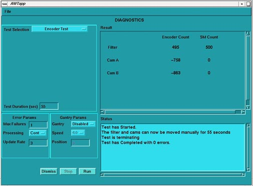

| NOTE: | This is a manual test that requires you to rotate the encoder shafts on either side of the collimator. Values in the SM Count (Service Mode) indicate a failure. The Filter row values are not of concern in this test. Illustration 1 is an example of both CAM’s be rotated separately with the results being posted. Set the duration long enough to walk back and forth between the console and gantry. |
Illustration 1: Collimator CAM A/B Manual Encoder Test
